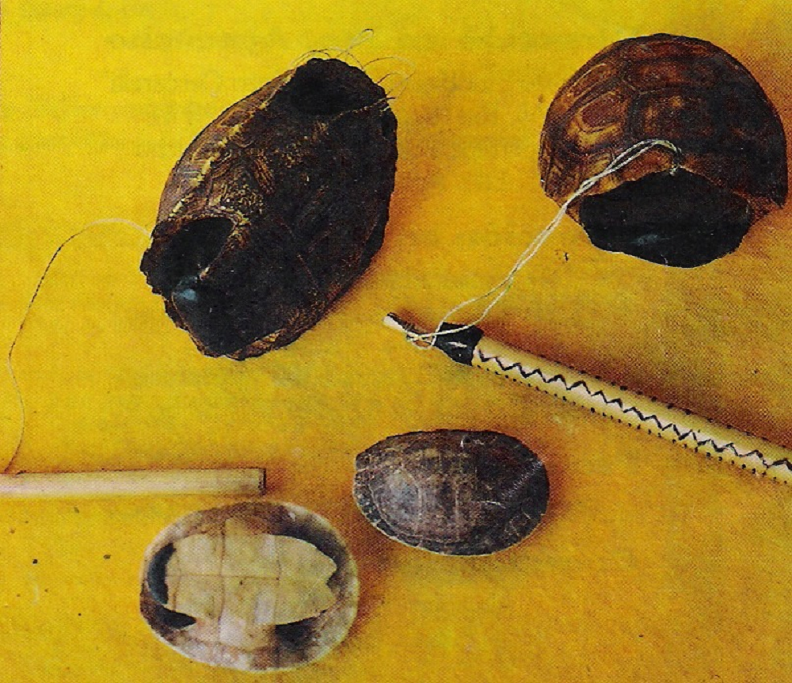

Panpipe and Turtle Shell
Note 013
Home > Blog A Musician's Log > Note 013
Composite Instrument Systems in Lowland Amazonia
In several Indigenous societies of northern South America, especially within the Guiana Shield region, ethnographic and archival documentation describes a recurring musical configuration: a small panpipe performed simultaneously with a turtle-shell idiophone. Among the Wayana communities of the Litani and Maroni river regions, spanning present-day Suriname and French Guiana, the panpipe known as luweimë appears in recordings and collection records together with a percussive turtle-shell element operated by the same performer.
From an organological standpoint, the two components are straightforward to classify separately. The panpipe belongs to the family of end-blown aerophones, whereas the shell functions as an idiophonic percussion instrument. Museum catalogues and classificatory systems such as Hornbostel-Sachs typically register them as distinct objects, organized according to their respective mechanisms of sound production.
Observed performance practice, however, complicates this analytical separation.
One Performer, Two Mechanisms
Archival recordings and collection notes indicate that Wayana performers produce both sound sources simultaneously. The panpipe is held and blown while the turtle shell is activated within the same bodily configuration, linking melodic and percussive articulation through a single coordinated gesture.
This simultaneity changes the analytical frame. Rather than functioning as two independently organized instruments, the aerophonic and idiophonic elements operate as parts of a unified performance system.
The shell does not behave as detached accompaniment. Its rhythmic articulation remains closely tied to breathing patterns and melodic phrasing. In recorded examples, the percussive attacks mark phrase boundaries, reinforce cyclical repetition, and accentuate the onset of the panpipe's short melodic figures. The result is not simply the superposition of melody and rhythm, but the production of a composite texture in which both sound sources are structurally interdependent.
Under these conditions, the configuration can be understood less as an ensemble and more as a composite instrument system performed by a single body.
Morphology and Constraint
Ethnographic documentation generally describes the luweimë as a small panpipe with a limited pitch range, commonly consisting of five tubes. This restricted tonal inventory strongly conditions musical organization. Instead of emphasizing extended melodic development, performances tend to rely on repetition, short cyclical patterns, subtle variation, and rhythmic reiteration.
Within such a constrained pitch field, articulation acquires particular importance. Rhythmic accentuation, attack profile, and phrase segmentation become central components of the musical texture.
The turtle shell contributes directly to this acoustic structure. Its hard surface produces sharp, dry percussive attacks characterized by rapid onset and short decay, contrasting with the softer and more sustained sound envelope of the reed tubes. This contrast increases the perceptual definition of repeated figures and reinforces transitions between melodic phrases.
Why Turtle Shell?
The use of turtle shells in these musical configurations is not arbitrary. Their physical properties, particularly curvature, rigidity, and low weight, produce bright percussive attacks with strong acoustic definition in open-air environments. In riverine and forest contexts, portability, resistance, and ease of access are also relevant practical factors.
Their role, however, extends beyond simple acoustic convenience. Ethnographic descriptions frequently identify the animal species employed, suggesting that zoological specificity may possess cultural or symbolic significance in addition to organological function. For this reason, descriptions that reduce these instruments to a generic category of “turtle-shell percussion” risk obscuring distinctions that may be socially or cosmologically meaningful within particular communities.
The material characteristics of the shell shape the instrument's timbre, while species selection may reflect broader relationships between musical practice, environment, and symbolic classification.
Diffusion or Structural Convergence?
Comparable combinations of panpipes and turtle-shell idiophones appear in several Indigenous societies across Amazonia and the Guiana region. Examples include the teteco of the Culina / Madija of eastern Peru, the kodedo (wayaamö ji'jo) of the Ye'kuana of Venezuela, and related configurations documented among the Wayãpi and other groups of the adjacent Amazonian regions. The recurrence of these aerophone-idiophone pairings raises an important comparative question: do these similarities result from historical diffusion through regional contact networks, or from independent processes of structural convergence?
Several factors could account for the emergence of similar configurations without requiring direct cultural transmission. One concerns environmental affordances. Panpipes can be constructed from readily available reeds or cane, while turtle shells are common materials in riverine ecosystems throughout lowland South America. Another factor is ergonomic. Small panpipes often leave one hand partially free, facilitating the simultaneous activation of a percussive surface. The resulting configuration is mechanically efficient and acoustically complementary.
At the same time, historical diffusion cannot be dismissed. Trade routes, ritual exchanges, and long-distance contact networks are well documented across the Guianas and western Amazonia, making the circulation of musical practices and instrument forms entirely plausible in some cases. Yet morphological similarity alone is insufficient to establish historical lineage. Questions of transmission require contextual evidence, including linguistic terminology, performance context, construction techniques, symbolic associations, and patterns of regional interaction.
Acoustic Ecology
In riverbank and open-forest environments, percussive and melodic sounds propagate differently. The turtle shell produces brief, high-frequency attacks that provide clear rhythmic definition in spaces with limited reverberation, while the panpipe contributes a more sustained melodic contour carried above the percussive layer. The contrast between the two sonic profiles increases the intelligibility of rhythmic cycles and phrase structure within outdoor performance settings.
The interaction between short melodic figures and sharply articulated percussion creates a texture capable of maintaining clarity without requiring high instrumental volume or large ensembles. For this reason, panpipe-and-shell configurations in Amazonia are better understood as integrated performance systems rather than as the simple juxtaposition of two independent instruments. When both elements are produced simultaneously by a single performer, rhythmic articulation, melodic phrasing, and bodily coordination become structurally inseparable.
Describing the components in isolation risks obscuring the performative relationships that give the system its coherence.
Readings
- Beaudet, Jean-Michel. 1997. Souffles d'Amazonie: les orchestres tule des Wayãpi. Nanterre: Société d'Ethnologie.
- Civallero, Edgardo. 2025. Turtle Shells in Traditional Latin American Music. Bogotá: El Zorro de Abajo Editora.
- Izikowitz, Karl Gustav. 1935. Musical and Other Sound Instruments of the South American Indians: A Comparative Ethnographical Study. Göteborg: Elanders Boktryckeri Aktiebolag.
Video. From YouTube user World Field Recordings.